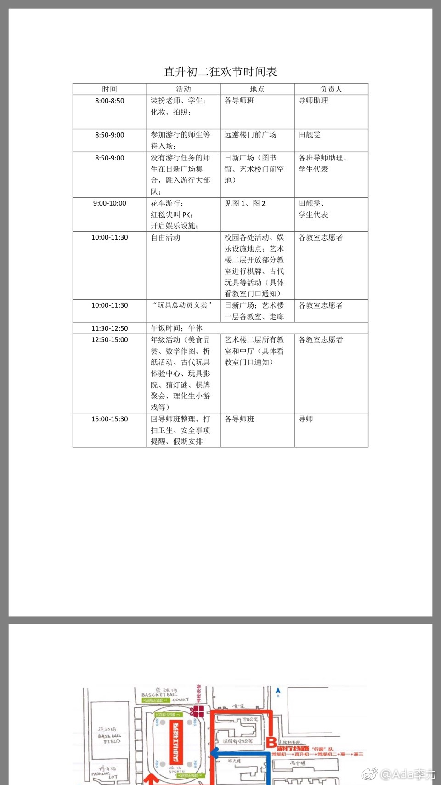

#姣姣#学校最近搞了个狂欢节，感觉这个中学的校园活动比大学还丰富。加上初一就实行选课制和导师制，一点不担心孩子上大学后会不适应，倒是担心姣姣进入大学后会失望。
从物质上来说，北京的一些重点中学设施和环境是好过很多大学的。姣姣曾跟慧慧姐姐去过北大的宿舍，被里面的脏乱吓到了。在复旦大学上学的慧慧，也曾提过大学环境不如她呆过的上海中学。
另外就是同学的落差。中学时期同学很均质化的，比如父母大都学历不错，家庭经济状况不差，上的课外班，去过的旅游地，也都大同小异。而大学同学则来自天南地北，家庭背景生活习惯等更是差异巨大。好的一面是这是学习跟不同人交往的好习惯；差的一面就是会怀念中学同学的优异和和谐共处。
都说人往高处走，有时候年轻少时已走得过高，是不是就得学会接下来都是下坡路的情景呢？
从物质上来说，北京的一些重点中学设施和环境是好过很多大学的。姣姣曾跟慧慧姐姐去过北大的宿舍，被里面的脏乱吓到了。在复旦大学上学的慧慧，也曾提过大学环境不如她呆过的上海中学。
另外就是同学的落差。中学时期同学很均质化的，比如父母大都学历不错，家庭经济状况不差，上的课外班，去过的旅游地，也都大同小异。而大学同学则来自天南地北，家庭背景生活习惯等更是差异巨大。好的一面是这是学习跟不同人交往的好习惯；差的一面就是会怀念中学同学的优异和和谐共处。
都说人往高处走，有时候年轻少时已走得过高，是不是就得学会接下来都是下坡路的情景呢？
- 